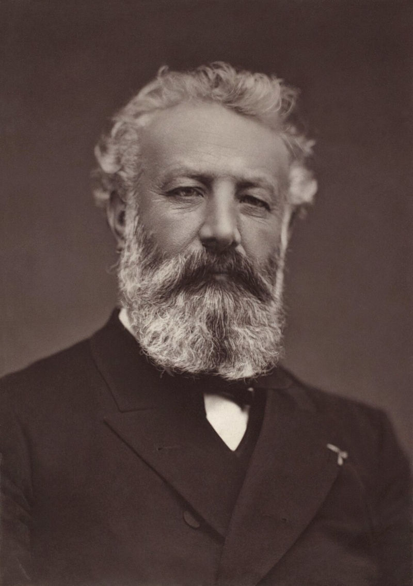

Sobre o livro
A Ilha Misteriosa é um livro de aventura e ficção científica escrito por Jules Verne e publicado em 1874. A história acompanha um grupo de sobreviventes que chegam a uma ilha desconhecida e precisam usar ciência, inteligência e trabalho em equipe para sobreviver e explorar os mistérios do lugar.

Resumo do livro
Durante a Guerra Civil Americana, cinco homens conseguem escapar de uma cidade sitiada usando um balão. Após uma forte tempestade, eles acabam caindo em uma ilha desconhecida no meio do oceano. Sem recursos e longe da civilização, o grupo precisa trabalhar junto para sobreviver. Liderados pelo engenheiro Cyrus Smith, eles usam conhecimento científico, criatividade e cooperação para construir abrigo, produzir ferramentas e explorar o novo território. Enquanto se adaptam à vida na ilha, acontecimentos estranhos começam a ocorrer, fazendo o grupo suspeitar que talvez não estejam completamente sozinhos naquele lugar misteriosoo.
Personagens
Cyrus Smith
Engenheiro muito inteligente e líder natural do grupo. Usa seus conhecimentos de ciência e engenharia para ajudar os sobreviventes a construir ferramentas, encontrar recursos e resolver diversos problemas enquanto vivem na ilha.
Gideon Spilett
Jornalista observador e curioso que acompanha atentamente tudo o que acontece na ilha. Ajuda o grupo nas explorações e demonstra grande coragem diante dos desafios que encontram.
Pencroff
Marinheiro experiente, trabalhador e muito otimista. Sempre tenta manter o grupo motivado e participa ativamente da construção de abrigos, ferramentas e outros recursos necessários para a sobrevivência.
Herbert
Jovem inteligente e curioso que demonstra grande interesse pela natureza da ilha. Aprende rapidamente e ajuda a identificar plantas, animais e outros recursos importantes para o grupo.
Nab
Companheiro fiel e dedicado, conhecido por sua lealdade e coragem. Está sempre disposto a ajudar os amigos e contribui com várias tarefas importantes para a sobrevivência do grupo.
Curiosidades
- O livro foi publicado em 1874 e é considerado uma das obras mais conhecidas de aventura de Jules Verne.
- A história começa durante a Guerra Civil Americana, quando alguns personagens fogem em um balão.
- Muitas soluções usadas pelos personagens na ilha são baseadas em ciência e engenharia, algo muito comum nas histórias de Jules Verne.
- A ilha onde a história acontece recebe o nome de Ilha Lincoln, em homenagem ao presidente americano Abraham Lincoln.
- O livro faz ligação com outra obra famosa de Jules Verne, Vinte Mil Léguas Submarinas, surpreendendo os leitores no final da história.
Sobre o autor
Jules Verne🔗 foi um escritor francês nascido em 1828 e conhecido por suas histórias de aventura e imaginação científica. Suas obras ficaram famosas por misturar exploração, tecnologia e conhecimento científico em histórias envolventes. Ele é considerado um dos pioneiros da literatura de ficção científica e escreveu vários livros que se tornaram clássicos, inspirando leitores e cientistas ao redor do mundo. Entre suas obras mais conhecidas estão A Ilha Misteriosa🔗 e Vinte Mil Léguas Submarinas🔗.
